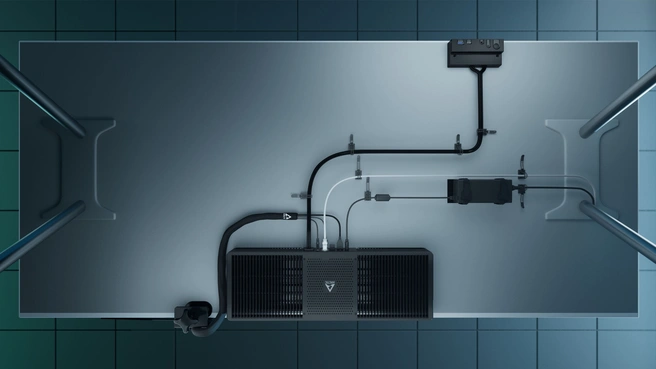

Arctic brengt pc uit die onder bureau kan worden geschroefd en weggewerkt
Arctic heeft een kant-en-klare pc uitgebracht die gebruikers direct aan de onderkant van hun bureau kunnen monteren. Er komen verschillende modellen met Ryzen-cpu's. De pc wordt met een kabelbeheerset geleverd en heeft een gekoppelde hub voor aansluitingen.
Arctic brengt de Senza Under Desk PC uit. Het gaat om een platte, kant-en-klare pc die met clips onder een bureau kan worden gemonteerd zodat hij daar uit het zicht hangt. Het apparaat meet 282x120x618mm en weegt 3,5 kilo. Het apparaat moet aan de onderkant van het bureau worden bevestigd met vier meegeleverde schroeven. Arctic levert verder meerdere clips en een sleeve mee voor kabelmanagement onder op het bureau. Die is onder andere nodig voor de voedingsadapter, want het apparaat heeft geen geïntegreerde psu.

De pc is bedoeld om uit het zicht weg te werken. Er wordt daarnaast een hub meegeleverd die met een kabel aan de pc vastzit en die gebruikers aan de voorkant van hun bureau kunnen plaatsen. Op die hub zit een USB 3.2 Type A-poort en een USB 3.2 Type-C-poort, naast een audioaansluiting en een aanknop. Er zitten verder nog USB A-poorten aan de achterkant van de computer zelf. Op de computer zitten daarnaast nog een 2,5GB-ethernetpoort, een HMDI 2.0- en een DisplayPort 1.2-poort en een audio-in- en uitgang. De Senza wordt passief gekoeld en is volgens Arctic daarom volledig geluidloos. Arctic heeft ook zijn eigen Arctic M.2 Pro-koeler op de ssd geplaatst.